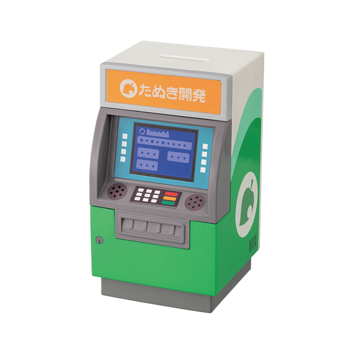

About us
News
Contact us
Welcome to Nook Inc.!
Nook Inc. is a development company owned by Tom Nook. Our mission is to help you set up and manage your dream island home.
Sign up
Services we offer:
The
Deserted Island Getaway Package
is a travel package to a Deserted Island provided by Nook Inc.
Resident Services
is there to support you with your every island development and resident management need

The
Nook Stop
gives you access to Nook Shopping (with next day delivery)
Dodo Airlines
and
Kapp'n's boat rides
allow you to travel to new and exciting places
"I'm quite glad that I'll be sharing this desolate island with such a hard worker, oho!"
- Tom Nook, our benevolent overlord